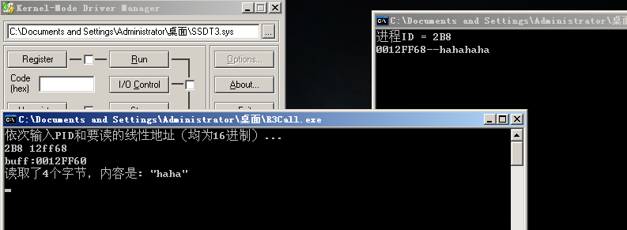
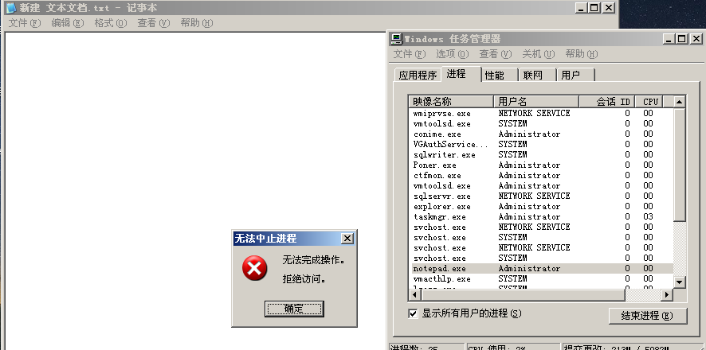
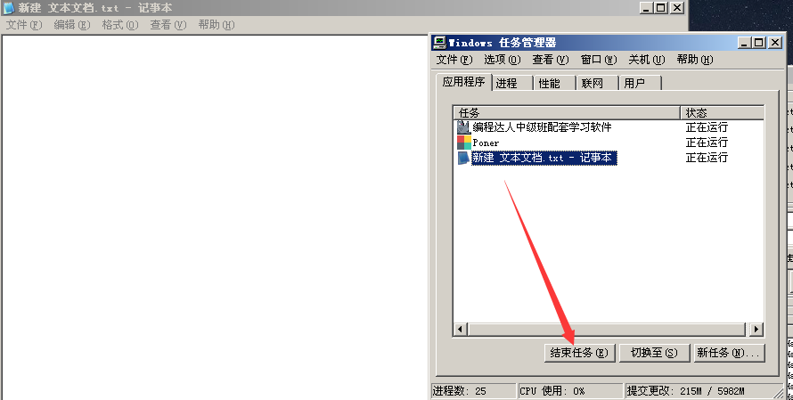
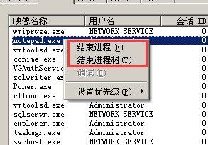

# 系统调用阶段总结
把本阶段的课后作业练习一下
# 在 SSDT 表中追加一个函数地址
在 SSDT 表中追加一个函数地址 (NtReadVirtualMemory), 自己编写 API 的 3 环部分调用这个新增的函数 (注意：使用 2-9-9-12 分页)。
发现函数表后面刚好有四个字节，然后就是参数表了，这四个字节的值为： 0000011c 刚好是函数表函数的个数，覆盖后暂时没出问题。
# 代码如下
// 在 SSDT 表中追加一个函数地址 (NtReadVirtualMemory), 自己编写 API 的 3 环部分调用这个新增的函数 (注意：使用 2-9-9-12 分页)。 | |
#include<ntifs.h> | |
VOID DriverUnload(PDRIVER_OBJECT pDriver) { | |
// 恢复懒得写了 | |
DbgPrint("我是驱动，我卸载了\t\n"); | |
} | |
VOID PageProtectOn() | |
{ | |
__asm { | |
mov eax, cr0 | |
or eax, 10000h | |
mov cr0, eax | |
sti | |
} | |
} | |
VOID PageProtectOff() | |
{ | |
__asm { | |
cli | |
mov eax, cr0 | |
and eax, not 10000h | |
mov cr0, eax | |
} | |
} | |
VOID ModifySSDT() { | |
extern PULONG KeServiceDescriptorTable; | |
// 获取函数表的指针 | |
PULONG pFuncTable = (PULONG)*KeServiceDescriptorTable; | |
DbgPrint("pFuncTable:%p\t\n", pFuncTable); | |
// 获取函数个数的指针 | |
PULONG pLimit = KeServiceDescriptorTable + 0x2; | |
DbgPrint("uLimit:%p\t\n", pLimit); | |
// 获取参数表的指针 | |
PUCHAR pArgumentTable = *(KeServiceDescriptorTable + 0x3); | |
DbgPrint("pArgumentTable:%p\t\n", pArgumentTable); | |
// 开始修改 | |
// 取函数表的后一项的地址，新加的函数就是这个地址，因为索引是从 0 开始的。 | |
PULONG ModifyAddress1 = pFuncTable + *pLimit; | |
// 取参数表的后一项的地址，新加的函数就是这个地址，因为索引是从 0 开始的。 | |
PUCHAR ModifyAddress2 = pArgumentTable + *pLimit; | |
DbgPrint("ModifyAddress1:%p\t\n", ModifyAddress1); | |
DbgPrint("ModifyAddress2:%p\t\n", ModifyAddress2); | |
// 修改为 ReadProcessMemory -> NtReadVirtualMemory -> 0xBA | |
PageProtectOff(); | |
*ModifyAddress1 = (ULONG)pFuncTable[0xBA]; | |
*pLimit += 1; | |
*ModifyAddress2 = (UCHAR)pArgumentTable[0xBA]; | |
PageProtectOn(); | |
DbgPrint("ModifyAddress1:%p\t\n", ModifyAddress1); | |
DbgPrint("*uLimit:%X\t\n", *pLimit); | |
DbgPrint("ModifyAddress2:%p\t\n", ModifyAddress2); | |
} | |
NTSTATUS DriverEntry(PDRIVER_OBJECT pDriver, PUNICODE_STRING pRegPath) { | |
pDriver->DriverUnload = DriverUnload; | |
// 修改 SSDT 表，增加一项。修改页保护 | |
ModifySSDT(); | |
return STATUS_SUCCESS; | |
} |
R3Call
#define _CRT_SECURE_NO_WARNINGS | |
#include<stdio.h> | |
#include<Windows.h> | |
__declspec(naked) void ModZwWriteVirtualMemory() { | |
__asm { | |
mov eax, 0x11C; NtReadVirtualMemory | |
mov edx, 7FFE0300h | |
call dword ptr[edx] | |
retn 0x14 | |
} | |
} | |
BOOL WINAPI WriteProcessMemory_FAST(HANDLE hProcess, LPCVOID lpBaseAddress, LPVOID lpBuffer, DWORD nSize, LPDWORD lpNumberOfBytesWritten) | |
{ | |
LONG NtStatus; | |
__asm | |
{ | |
// 模拟 WriteProcessMemory | |
lea eax, lpNumberOfBytesWritten; | |
push eax; | |
push lpNumberOfBytesWritten; | |
push nSize; | |
push lpBuffer; | |
push lpBaseAddress; | |
push hProcess; | |
call ModZwWriteVirtualMemory | |
mov NtStatus, eax; | |
} | |
if (lpNumberOfBytesWritten != NULL) | |
{ | |
*lpNumberOfBytesWritten = nSize; | |
} | |
// 错误检查 | |
if (NtStatus < 0) | |
{ | |
return FALSE; | |
} | |
return TRUE; | |
} | |
// 提权函数：提升为 DEBUG 权限 | |
BOOL EnableDebugPrivilege() | |
{ | |
HANDLE hToken; | |
BOOL fOk = FALSE; | |
if (OpenProcessToken(GetCurrentProcess(), TOKEN_ADJUST_PRIVILEGES, &hToken)) | |
{ | |
TOKEN_PRIVILEGES tp; | |
tp.PrivilegeCount = 1; | |
LookupPrivilegeValue(NULL, SE_DEBUG_NAME, &tp.Privileges[0].Luid); | |
tp.Privileges[0].Attributes = SE_PRIVILEGE_ENABLED; | |
AdjustTokenPrivileges(hToken, FALSE, &tp, sizeof(tp), NULL, NULL); | |
fOk = (GetLastError() == ERROR_SUCCESS); | |
CloseHandle(hToken); | |
} | |
return fOk; | |
} | |
int main(int argc, char* argv[]) { | |
EnableDebugPrivilege(); | |
DWORD pid, addr, dwRead; | |
char buff[20] = { 0 }; | |
printf("依次输入PID和要读的线性地址（均为16进制）...\n"); | |
scanf("%x %x", &pid, &addr); | |
getchar(); | |
printf("buff:%p\n", buff); | |
WriteProcessMemory_FAST(OpenProcess(PROCESS_ALL_ACCESS, FALSE, pid), (LPCVOID)(addr+4), buff, 4, &dwRead); | |
printf("读取了%d个字节，内容是: \"%s\"\n", dwRead, buff); | |
getchar(); | |
} |
TestReWriteR3ApI
#include <stdio.h> | |
#include <windows.h> | |
#include <Tlhelp32.h> | |
int main(int argc, char* argv[]) | |
{ | |
// 获取进程自身的 PID | |
HANDLE hSnapshot = CreateToolhelp32Snapshot(TH32CS_SNAPPROCESS, 0); | |
if (INVALID_HANDLE_VALUE == hSnapshot) | |
{ | |
return 0; | |
} | |
PROCESSENTRY32 pi; | |
pi.dwSize = sizeof(PROCESSENTRY32); // 第一次使用必须初始化成员 | |
BOOL bRet = Process32First(hSnapshot, &pi); | |
while (bRet) | |
{ | |
if (strcmp("TestReWriteR3API.exe", pi.szExeFile) == 0) | |
{ | |
printf("进程ID = %X \r\n", pi.th32ProcessID); | |
break; | |
} | |
bRet = Process32Next(hSnapshot, &pi); | |
} | |
CloseHandle(hSnapshot); | |
char str[] = "hahahaha"; | |
printf("%p--%s\n", str, str); | |
getchar(); | |
return 0; | |
} |
截图：

# SSDT HOOK 实现进程保护
将系统服务表中某个函数改成自己的函数，使任务管理器右键无法关闭自己，只有点击自己的关闭按钮才可以正常关闭。
方法是 SSDT HOOK NtTerminateProcess 函数，进行一系列的判断。就保护记事本 (notepad.exe) 了。
个人思路是：
先判断要结束的进程是否是记事本 (notepad.exe), 不是则调用老的 TerminateProcess 函数。如果是在判断当前进程是否是记事本 (notepad.exe)。
判断当前进程是否是记事本 (notepad.exe)：
1、当前进程句柄的值是 0xFFFFFFFF ，只需要判断一下进程句柄是否是 0xFFFFFFFF 就知道是否是当前进程自己点击关闭按钮了。
2、调用 API，获取记事本的 pid，然后再 hook 的函数中获取当前进程的 pid，进行判断。
3、查 KPCR -> 获取当前线程结构体 -> 获取当前进程结构体 -> 查当前进程的名字、也可以查当前进程的 pid // 因为我写博客写的有点晚，写这篇博客的时候进程与线程已经学了一些了。
# 代码如下
#include<ntddk.h> | |
//SST 系统服务表 | |
typedef struct _KSYSTEM_SERVICE_TABLE | |
{ | |
PULONG FuncTable; | |
ULONG Count; | |
ULONG ServiceLimit; | |
PUCHAR ArgumentTable; | |
}KSST, * PKSST; | |
//SSDT | |
typedef struct _SSDT | |
{ | |
KSST ServiceTable; | |
KSST ServiceTableShadow; | |
KSST un1; | |
KSST un2; | |
}SSDT, * PSSDT; | |
// 函数指针 | |
typedef BOOLEAN (*pTerminateProcess)( HANDLE hProcess, ULONG uExitCode); | |
// 获取 SSDT 的导出变量 | |
extern PSSDT KeServiceDescriptorTable; | |
ULONG OldNtTerminateProcess; | |
// 声明函数 | |
VOID DriverUnload(PDRIVER_OBJECT pDriver); | |
NTSTATUS MyTerminateProcess(HANDLE hProcess, ULONG uExitCode); | |
VOID HookFunc(); | |
VOID UnHookFunc(); | |
VOID PageProtectOn(); | |
VOID PageProtectOff(); | |
VOID DriverUnload(PDRIVER_OBJECT pDriver) { | |
UnHookFunc(); | |
DbgPrint("我是驱动我卸载了\t\n"); | |
} | |
VOID PageProtectOn() | |
{ | |
__asm { | |
mov eax, cr0 | |
or eax, 10000h | |
mov cr0, eax | |
sti | |
} | |
} | |
VOID PageProtectOff() | |
{ | |
__asm { | |
cli | |
mov eax, cr0 | |
and eax, not 10000h | |
mov cr0, eax | |
} | |
} | |
VOID HookFunc() | |
{ | |
DbgPrint("The start of the hook!\t\n"); | |
PageProtectOff(); | |
KeServiceDescriptorTable->ServiceTable.FuncTable[0x101] = (ULONG)MyTerminateProcess; | |
PageProtectOn(); | |
} | |
VOID UnHookFunc() | |
{ | |
PageProtectOff(); | |
KeServiceDescriptorTable->ServiceTable.FuncTable[0x101] = OldNtTerminateProcess; | |
PageProtectOn(); | |
DbgPrint("The end of the hook!\t\n"); | |
} | |
NTSTATUS MyTerminateProcess(HANDLE hProcess, ULONG uExitCode) { | |
ULONG NotepadPid; | |
PUCHAR pImageFileName; | |
ULONG pEprocess; | |
NTSTATUS status = ObReferenceObjectByHandle(hProcess, FILE_READ_DATA, NULL, KernelMode, (PVOID*)&pEprocess, NULL); | |
if (!NT_SUCCESS(status)) | |
{ | |
return status; | |
} | |
// 判断要关闭的是否是记事本 (notepad.exe)，这里进程名的字符字符串最大是 16，所以不用担心越界 | |
pImageFileName = (PUCHAR)pEprocess + 0x174; | |
if (strcmp(pImageFileName, "notepad.exe") == 0) | |
{ | |
if (hProcess == (HANDLE)0xFFFFFFFF) | |
{ | |
// 通过关闭按钮关闭 | |
return ((pTerminateProcess)OldNtTerminateProcess)(hProcess, uExitCode); | |
} | |
else | |
{ | |
// 通过任务管理器关闭 | |
DbgPrint("Terminate denied. %s: NtTerminateProcess(%x, %x)\n", pImageFileName, hProcess, uExitCode); | |
return STATUS_ACCESS_DENIED; | |
} | |
} | |
return ((pTerminateProcess)OldNtTerminateProcess)(hProcess, uExitCode); | |
} | |
NTSTATUS DriverEntry(PDRIVER_OBJECT pDriver, PUNICODE_STRING pRegPath) { | |
pDriver->DriverUnload = DriverUnload; | |
// 定义老的 NtTerminateProcess | |
OldNtTerminateProcess = KeServiceDescriptorTable->ServiceTable.FuncTable[0x101]; | |
DbgPrint("OldNtTerminateProcess:%X\t\n", OldNtTerminateProcess); | |
//SSDT HOOK TerminateProcess | |
HookFunc(); | |
return STATUS_SUCCESS; | |
} |
截图：

发现在这里点击结束任务，还是可以结束。

不论是点击结束进程或是进程树，都无法结束

驱动卸载后，hook 也就卸载了。
# SSDT HOOK 实现 FindWindowA 监视器
FinWindowsA 是 Shadow 表中的函数。
3 环调用流程分析
FinWindowsA -> 调用一系列的 ASCII 转 Unicode 函数，最终调用 -> NtUserFindWindowEx
传入服务号为 0x117A 。注意真正的编号还要与 0xFFF 进行与操作。
win32k.sys 系统服务表可能会缺页，要在驱动里访问它，做法是创建一个已经调用过 GDI 函数的进程（不一定是窗口程序），然后通过 DeviceIoControl 函数和驱动通信，这样执行驱动代码时所属进程已经给 win32k.sys 系统服务表挂上物理页了，访问就不会蓝屏。这里参考：https://blog.csdn.net/Kwansy/article/details/109510606 博主的文章，具体要自己逆向创建 GDI 线程的部分，才能清晰。
并且还可以发现一个细节：当 3 环程序向驱动发起通信时，驱动所属进程就是 3 环的程序
# 代码如下
# Reference
https://blog.csdn.net/Kwansy/article/details/109510606
https://blog.csdn.net/Kwansy/article/details/109490657